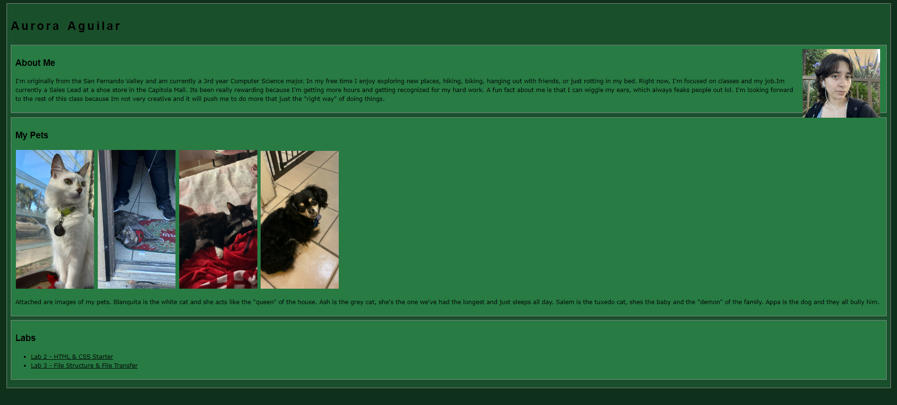
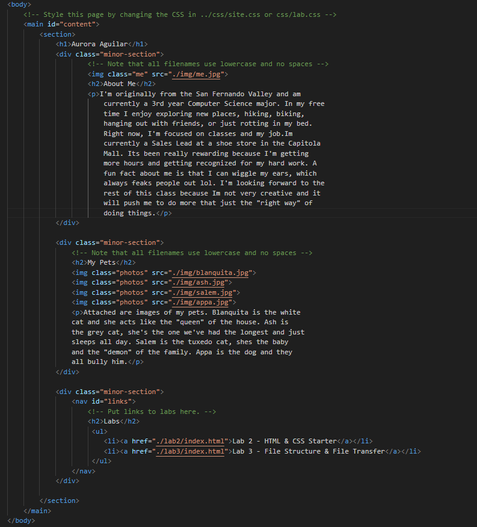

Lab 3 - File Structure & File Transfer
Challenge
The challenge of this assignment is to build a homepage and a lab page using HTML, add images and links to previous labs, and make sure everything fuctions locally before uploading the project to GitHub.
Problems
When working with my partner, we encountered a problem with pushing our changes to github. It stated we had no internet connection when we did. We tried restarting our devices and using a hotspot, however that didnt work. So we decided to wait a day to see if that would help.
Reflection
Overall the assignment when well and even though I didn't have enough time to get creative, I still put in a lot of effort into this lab. I had a lot of fun going through the hexcodes to get the right shades of green and trying to troubleshoot our issues.
Results
Homepage
HTML for homepage
